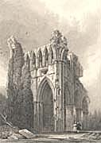

|
|
Home | Corson
Collection | Biography | Works | Image
Collection | Recent Publications | Portraits | Correspondence | Forthcoming
Events | E-texts | Contact
-
-
-
1. E-Texts
of Printed Biographies
2.
Biographical Web-Pages
The following is a selection of the most accurate and comprehensive
of the many brief online biographies of Scott.
-
Authors'
Calendar - Part of a collection of biographical pages
ordered both alphabetically and by date of birth, this
page offers a brief overview of Scott's life and career,
an account of his posthumous reputation, a chronological
list of his major works, and a useful list of books for
further reading.
- Edinburgh
University Library Gallery of Benefactors - This biographical
page honours Scott's gift to the library of a copy of Sir
Tristrem: A Metrical Romance of the Thirteenth Century by
Thomas of Ercildoune, Called the Rhymer (1804) which
he had edited from the Auchinleck manuscript.
- Everything2.com -
This writing community site provides an irreverent and not
always accurate account of Scott's life and works by 'Scriblerus'
with hypertextual links to other entries (from 'kilt' to 'whisky
drinking').
- Famous
Scots - From Rampant
Scotland, this biographical page contains images of Sir
John Steele's sculpture of Scott in the Edinburgh Scott Monument
and of Scott's portrait on a modern Bank of Scotland £5
note (see Letters
of Malachi Malagrowther). There are links to pages
on the Scott Monument, and on George IV's visit to Edinburgh
in 1822.
- Gazetteer
for Scotland - Biographical notice, with image of Henry
Raeburn's 1823 portrait, from a site hosted by the Department
of Geography, University of Edinburgh.
- Malaspina Great
Books - This detailed biographical page is adapted from
the 1911 edition of the Encyclopedia Britannica. There
are links to other biographical pages, e-texts, online citations,
online book-sellers, and other Scott-related sites.
- Ram's Horn
Studio - Detailed bio-bibliography by craftsmen and jewellers
Jim and Beth Boyle, inspired by a visit to Scott's Abbotsford home.
Accompanied by high-quality images of Scott and Abbotsford.
- Significant
Scots - Detailed biography from Alastair McIntyre's Electric
Scotland site, with portrait and links to e-texts.
3.
Pages on Episodes in Scott's Life
- 'The
Illnesses of Sir Walter Scott' by James Miller - From
the archives of the Canadian
Medical Association Journal, an article originally
published in the Journal in December 1932.
- James
Nasmyth, Engineer: An Autobiography, ed. Samuel Smiles -
Chapter 5 of Nasmyths's autobiography, published here by Bibliomania,
records his childhood encounters with Scott in Edinburgh
and, in particular, Scott's presence during the demolition
of the Old Tolbooth gaol in 1817. Nasmyth's father was
the distinguished painter and architect Alexander Nasymth,
who provided illustrations for Scott's Border Antiquities
of England and Scotland (1814-17), for Charles Heath's Waverley
Album (1832), and for Landscape Illustrations
of the Waverley Novels (1832). The latter included
a picture of the Old Tolbooth, reproduced as an illustration
to the Bibliomania text.
- Resolutions
Proposed in the Aftermath of the Battle of Waterloo, June
27, 1815 - From the Napoleon
Bonaparte Internet Guide, this page offers a report from
the Edinburgh Evening Courant on 'a meeting of the
Noblemen, Gentlemen, Merchants, Bankers, Traders, and other
Inhabitants of Edinburgh, Leith, and their vicinity, held
within the Parliament-house, on the 27th June 1815'. The
resolutions, which were unanimously adopted, served to open
a subscription to assist the wounded of Waterloo and the
widows and children of those slain. They were proposed by
Alexander Maconochie, Solicitor General for Scotland, and
seconded by Scott.
- Scotland's
Pages - This is an interactive timeline of Scottish history
based on an exhibition of manuscripts and printed material
held in the National Library
of Scotland in summer 2000. The entries for 1814, 1818,
and 1822 deal
respectively with the publication of Waverley,
Scott's role in recovering the Honours of Scotland, and George
IV's visit to Scotland.
- 'Sir
Walter Scott's Memories of Prestonpans' by Betty Wilson -
An essay by a member of the Prestonpans
Historical Society, describing Scott's two visits to
Prestonpans in 1779 and 1830. As a child of eight, Scott
spent some weeks with his Aunt Jenny in Prestonpans where
it was thought that seabathing might assist his lameness.
In 1830 Scott visited the site of the Battle of Prestonpans
(1745) with his publisher Robert Cadell and Cadell's brother
Francis.
- Sir
Walter Scott's Visit To Ireland - From Ken Finlay's Chapters
of Dublin History site, an article reprinted from the Dublin
Penny Journal, December 15, 1832, describing Scott's
visit to Ireland in summer 1825. It is accompanied by an
engraving of a medallion of Scott by John Henning.
Back to top

Back to index
Last updated: 25-Nov-2011
© Edinburgh University Library
|
|